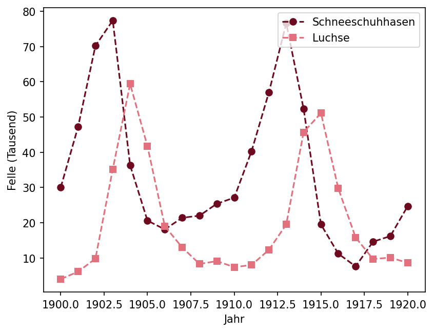
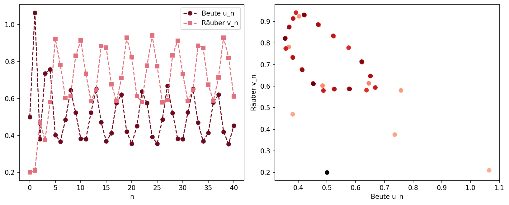
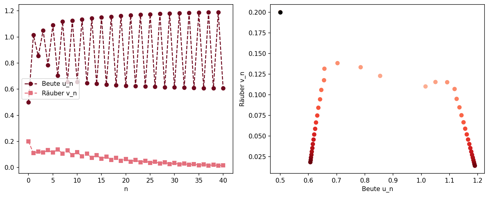

Kapitel 2 · Diskrete dynamische Systeme mit mehreren Variablen
2.1Beispiele: Fibonacci und Räuber-Beute
Viele Vorgänge lassen sich nur mit mehreren Größen zugleich beschreiben: junge und erwachsene Hasenpaare, Beute und Räuber. Jede Größe erhält eine eigene Rekursionsvorschrift, und die Vorschriften hängen voneinander ab. So entsteht ein System von Differenzengleichungen.
Zu jeder Abbildung des Abschnitts finden Sie das Programm, das sie erzeugt. Ändern Sie Parameter und Startwerte und beobachten Sie, was passiert. Abbildungs- und Gleichungsnummern beziehen sich auf das Buch.
Abb. 2.2
Luchse und Schneeschuhhasen
Felle in Tausend, 1900–1920
Die Daten der Hudson's Bay Company zeigen gegeneinander versetzte Schwingungen: Die Zahl der Luchse erreicht ihr Maximum ein bis zwei Jahre nach der Zahl der Hasen. Das Programm bestimmt die Maxima für jedes Jahrzehnt.

# Abb. 2.2: Luchse und Schneeschuhhasen (Buch, Abschnitt 2.1)
# Anzahl der von der Hudson's Bay Company angekauften Felle (in Tausend), 1900-1920, nach Odum (1953)
# (c) 2026 Philipp Kügler · Programm zum Buch „Dynamische Systeme in den Lebenswissenschaften“ · MIT-Lizenz (siehe LICENSE)
using Printf, Plots, LinearAlgebra
jahr = 1900:1920
hasen = [30, 47.2, 70.2, 77.4, 36.3, 20.6, 18.1, 21.4, 22, 25.4, 27.1, 40.3, 57, 76.6, 52.3, 19.5, 11.2, 7.6, 14.6, 16.2, 24.7]
luchse = [4, 6.1, 9.8, 35.2, 59.4, 41.7, 19, 13, 8.3, 9.1, 7.4, 8, 12.3, 19.5, 45.7, 51.1, 29.7, 15.8, 9.7, 10.1, 8.6]
for (von, bis) in [(1900, 1909), (1910, 1920)] # Maxima je Jahrzehnt: die Luchse folgen den Hasen
m = (jahr .>= von) .& (jahr .<= bis)
@printf("%d-%d: meiste Hasen %d, meiste Luchse %d\n", von, bis, jahr[m][argmax(hasen[m])], jahr[m][argmax(luchse[m])])
end
p = plot(jahr, hasen, ls = :dash, marker = :circle, color = RGB(0.43, 0.04, 0.12), label = "Schneeschuhhasen",
xlabel = "Jahr", ylabel = "Felle (Tausend)")
plot!(p, jahr, luchse, ls = :dash, marker = :rect, color = RGB(0.89, 0.44, 0.49), label = "Luchse")
display(p)% Abb. 2.2: Luchse und Schneeschuhhasen (Buch, Abschnitt 2.1)
% Anzahl der von der Hudson's Bay Company angekauften Felle (in Tausend), 1900-1920, nach Odum (1953)
% (c) 2026 Philipp Kügler · Programm zum Buch „Dynamische Systeme in den Lebenswissenschaften“ · MIT-Lizenz (siehe LICENSE)
jahr = 1900:1920;
hasen = [30 47.2 70.2 77.4 36.3 20.6 18.1 21.4 22 25.4 27.1 40.3 57 76.6 52.3 19.5 11.2 7.6 14.6 16.2 24.7];
luchse = [4 6.1 9.8 35.2 59.4 41.7 19 13 8.3 9.1 7.4 8 12.3 19.5 45.7 51.1 29.7 15.8 9.7 10.1 8.6];
grenzen = [1900 1909; 1910 1920]; % Maxima je Jahrzehnt: die Luchse folgen den Hasen
for i = 1:2
m = jahr >= grenzen(i, 1) & jahr <= grenzen(i, 2);
j = jahr(m);
[~, ih] = max(hasen(m)); [~, il] = max(luchse(m));
fprintf('%d-%d: meiste Hasen %d, meiste Luchse %d\n', grenzen(i, 1), grenzen(i, 2), j(ih), j(il));
end
plot(jahr, hasen, '--o', 'Color', [0.43 0.04 0.12]); hold on
plot(jahr, luchse, '--s', 'Color', [0.89 0.44 0.49]); hold off
xlabel('Jahr'); ylabel('Felle (Tausend)'); legend('Schneeschuhhasen', 'Luchse');# Abb. 2.2: Luchse und Schneeschuhhasen (Buch, Abschnitt 2.1)
# Anzahl der von der Hudson's Bay Company angekauften Felle (in Tausend), 1900-1920, nach Odum (1953)
# (c) 2026 Philipp Kügler · Programm zum Buch „Dynamische Systeme in den Lebenswissenschaften“ · MIT-Lizenz (siehe LICENSE)
import numpy as np
import matplotlib.pyplot as plt
jahr = np.arange(1900, 1921)
hasen = [30, 47.2, 70.2, 77.4, 36.3, 20.6, 18.1, 21.4, 22, 25.4, 27.1, 40.3, 57, 76.6, 52.3, 19.5, 11.2, 7.6, 14.6, 16.2, 24.7]
luchse = [4, 6.1, 9.8, 35.2, 59.4, 41.7, 19, 13, 8.3, 9.1, 7.4, 8, 12.3, 19.5, 45.7, 51.1, 29.7, 15.8, 9.7, 10.1, 8.6]
for von, bis in [(1900, 1909), (1910, 1920)]: # Maxima je Jahrzehnt: die Luchse folgen den Hasen
m = (jahr >= von) & (jahr <= bis)
print(f"{von}-{bis}: meiste Hasen {jahr[m][np.argmax(np.array(hasen)[m])]}, meiste Luchse {jahr[m][np.argmax(np.array(luchse)[m])]}")
plt.plot(jahr, hasen, "o--", color=(0.43, 0.04, 0.12), label="Schneeschuhhasen")
plt.plot(jahr, luchse, "s--", color=(0.89, 0.44, 0.49), label="Luchse")
plt.xlabel("Jahr"); plt.ylabel("Felle (Tausend)"); plt.legend()
plt.show()# Abb. 2.2: Luchse und Schneeschuhhasen (Buch, Abschnitt 2.1)
# Anzahl der von der Hudson's Bay Company angekauften Felle (in Tausend), 1900-1920, nach Odum (1953)
# (c) 2026 Philipp Kügler · Programm zum Buch „Dynamische Systeme in den Lebenswissenschaften“ · MIT-Lizenz (siehe LICENSE)
jahr <- 1900:1920
hasen <- c(30, 47.2, 70.2, 77.4, 36.3, 20.6, 18.1, 21.4, 22, 25.4, 27.1, 40.3, 57, 76.6, 52.3, 19.5, 11.2, 7.6, 14.6, 16.2, 24.7)
luchse <- c(4, 6.1, 9.8, 35.2, 59.4, 41.7, 19, 13, 8.3, 9.1, 7.4, 8, 12.3, 19.5, 45.7, 51.1, 29.7, 15.8, 9.7, 10.1, 8.6)
for (g in list(c(1900, 1909), c(1910, 1920))) { # Maxima je Jahrzehnt: die Luchse folgen den Hasen
m <- jahr >= g[1] & jahr <= g[2]
cat(sprintf("%d-%d: meiste Hasen %d, meiste Luchse %d\n", g[1], g[2], jahr[m][which.max(hasen[m])], jahr[m][which.max(luchse[m])]))
}
plot(jahr, hasen, type = "o", lty = 2, pch = 16, col = rgb(0.43, 0.04, 0.12), ylim = c(0, 80), xlab = "Jahr", ylab = "Felle (Tausend)")
lines(jahr, luchse, type = "o", lty = 2, pch = 15, col = rgb(0.89, 0.44, 0.49))
legend("topright", legend = c("Schneeschuhhasen", "Luchse"), col = c(rgb(0.43, 0.04, 0.12), rgb(0.89, 0.44, 0.49)), pch = c(16, 15), lty = 2)Ausgabe im Befehlsfenster
1900-1909: meiste Hasen 1903, meiste Luchse 1904
1910-1920: meiste Hasen 1913, meiste Luchse 1915Abb. 2.4
Räuber-Beute-Modell: beide überleben
un+1 = (1 + r) un − r un2 − γ un vn, vn+1 = γ un vn
Mit r = 3.1 und γ = 2.1 schwingen Beute und Räuber gegeneinander versetzt wie in den Felldaten. In der Phasenebene (rechts) kreisen die Zustände um den stationären Zustand (1/γ, r(1 − 1/γ)/γ).

# Abb. 2.4: Räuber-Beute-Modell, Räuber und Beute überleben (Buch, Abschnitt 2.1, Gl. 2.3)
# u_{n+1} = (1 + r) u_n - r u_n^2 - gamma u_n v_n, v_{n+1} = gamma u_n v_n mit r = 3.1, gamma = 2.1, u_0 = 0.5, v_0 = 0.2
# (c) 2026 Philipp Kügler · Programm zum Buch „Dynamische Systeme in den Lebenswissenschaften“ · MIT-Lizenz (siehe LICENSE)
using Printf, Plots, LinearAlgebra
r = 3.1; gamma = 2.1
N = 40
u = zeros(N + 1); v = zeros(N + 1)
u[1] = 0.5; v[1] = 0.2 # Julia zählt ab 1: u[1] ist u_0
for k in 1:N
u[k + 1] = (1 + r) * u[k] - r * u[k]^2 - gamma * u[k] * v[k]
v[k + 1] = gamma * u[k] * v[k]
end
@printf("stationärer Zustand (1/gamma, r(1 - 1/gamma)/gamma) = (%.4f, %.4f)\n", 1/gamma, r * (1 - 1/gamma) / gamma)
println("u_36 ... u_40 = ", join([@sprintf("%.3f", x) for x in u[37:41]], " "))
n = 0:N
p1 = plot(n, u, ls = :dash, marker = :circle, color = RGB(0.43, 0.04, 0.12), label = "Beute u_n", xlabel = "n")
plot!(p1, n, v, ls = :dash, marker = :rect, color = RGB(0.89, 0.44, 0.49), label = "Räuber v_n")
p2 = scatter(u, v, zcolor = n, color = cgrad([RGB(1, 0.85, 0.85), RGB(0.43, 0.04, 0.12)]), legend = false, colorbar = false,
xlabel = "Beute u_n", ylabel = "Räuber v_n") # hell: früh, dunkel: spät
scatter!(p2, [u[1]], [v[1]], color = :black, ms = 6)
display(plot(p1, p2, layout = (1, 2), size = (900, 420)))% Abb. 2.4: Räuber-Beute-Modell, Räuber und Beute überleben (Buch, Abschnitt 2.1, Gl. 2.3)
% u_{n+1} = (1 + r) u_n - r u_n^2 - gamma u_n v_n, v_{n+1} = gamma u_n v_n mit r = 3.1, gamma = 2.1, u_0 = 0.5, v_0 = 0.2
% (c) 2026 Philipp Kügler · Programm zum Buch „Dynamische Systeme in den Lebenswissenschaften“ · MIT-Lizenz (siehe LICENSE)
r = 3.1; gamma = 2.1; N = 40;
u = zeros(1, N + 1); v = zeros(1, N + 1);
u(1) = 0.5; v(1) = 0.2; % MATLAB zählt ab 1: u(1) ist u_0
for k = 1:N
u(k + 1) = (1 + r) * u(k) - r * u(k)^2 - gamma * u(k) * v(k);
v(k + 1) = gamma * u(k) * v(k);
end
fprintf('stationärer Zustand (1/gamma, r(1 - 1/gamma)/gamma) = (%.4f, %.4f)\n', 1/gamma, r * (1 - 1/gamma) / gamma);
fprintf('u_36 ... u_40 = '); fprintf('%.3f ', u(37:41)); fprintf('\n');
n = 0:N;
subplot(1, 2, 1);
plot(n, u, '--o', 'Color', [0.43 0.04 0.12]); hold on
plot(n, v, '--s', 'Color', [0.89 0.44 0.49]); hold off
xlabel('n'); legend('Beute u_n', 'Räuber v_n');
subplot(1, 2, 2);
rot = [linspace(1, 0.43, 64)' linspace(0.85, 0.04, 64)' linspace(0.85, 0.12, 64)'];
colormap(rot); scatter(u, v, 30, n, 'filled'); hold on % hell: früh, dunkel: spät
plot(u(1), v(1), 'ko', 'MarkerFaceColor', 'k'); hold off
xlabel('Beute u_n'); ylabel('Räuber v_n');# Abb. 2.4: Räuber-Beute-Modell, Räuber und Beute überleben (Buch, Abschnitt 2.1, Gl. 2.3)
# u_{n+1} = (1 + r) u_n - r u_n^2 - gamma u_n v_n, v_{n+1} = gamma u_n v_n mit r = 3.1, gamma = 2.1, u_0 = 0.5, v_0 = 0.2
# (c) 2026 Philipp Kügler · Programm zum Buch „Dynamische Systeme in den Lebenswissenschaften“ · MIT-Lizenz (siehe LICENSE)
import numpy as np
import matplotlib.pyplot as plt
r, gamma, N = 3.1, 2.1, 40
u = np.zeros(N + 1); v = np.zeros(N + 1)
u[0], v[0] = 0.5, 0.2
for n in range(N):
u[n + 1] = (1 + r) * u[n] - r * u[n]**2 - gamma * u[n] * v[n]
v[n + 1] = gamma * u[n] * v[n]
print(f"stationärer Zustand (1/gamma, r(1 - 1/gamma)/gamma) = ({1 / gamma:.4f}, {r * (1 - 1 / gamma) / gamma:.4f})")
print("u_36 ... u_40 =", " ".join(f"{x:.3f}" for x in u[36:]))
fig, axs = plt.subplots(1, 2, figsize=(11, 4.5))
n = np.arange(N + 1)
axs[0].plot(n, u, "o--", color=(0.43, 0.04, 0.12), label="Beute u_n")
axs[0].plot(n, v, "s--", color=(0.89, 0.44, 0.49), label="Räuber v_n")
axs[0].set_xlabel("n"); axs[0].legend()
axs[1].scatter(u, v, c=n, cmap="Reds", vmin=-15) # hell: früh, dunkel: spät
axs[1].plot(u[0], v[0], "ko")
axs[1].set_xlabel("Beute u_n"); axs[1].set_ylabel("Räuber v_n")
plt.tight_layout()
plt.show()# Abb. 2.4: Räuber-Beute-Modell, Räuber und Beute überleben (Buch, Abschnitt 2.1, Gl. 2.3)
# u_{n+1} = (1 + r) u_n - r u_n^2 - gamma u_n v_n, v_{n+1} = gamma u_n v_n mit r = 3.1, gamma = 2.1, u_0 = 0.5, v_0 = 0.2
# (c) 2026 Philipp Kügler · Programm zum Buch „Dynamische Systeme in den Lebenswissenschaften“ · MIT-Lizenz (siehe LICENSE)
r <- 3.1; gamma <- 2.1
N <- 40
u <- numeric(N + 1); v <- numeric(N + 1)
u[1] <- 0.5; v[1] <- 0.2 # R zählt ab 1: u[1] ist u_0
for (k in 1:N) {
u[k + 1] <- (1 + r) * u[k] - r * u[k]^2 - gamma * u[k] * v[k]
v[k + 1] <- gamma * u[k] * v[k]
}
cat(sprintf("stationärer Zustand (1/gamma, r(1 - 1/gamma)/gamma) = (%.4f, %.4f)\n", 1/gamma, r * (1 - 1/gamma) / gamma))
cat("u_36 ... u_40 =", sprintf("%.3f", u[37:41]), "\n")
n <- 0:N
par(mfrow = c(1, 2))
plot(n, u, type = "o", lty = 2, pch = 16, col = rgb(0.43, 0.04, 0.12), ylim = range(c(u, v)), xlab = "n", ylab = "")
lines(n, v, type = "o", lty = 2, pch = 15, col = rgb(0.89, 0.44, 0.49))
legend("topright", legend = c("Beute u_n", "Räuber v_n"), col = c(rgb(0.43, 0.04, 0.12), rgb(0.89, 0.44, 0.49)), pch = c(16, 15), lty = 2)
hell_dunkel <- colorRampPalette(c(rgb(1, 0.85, 0.85), rgb(0.43, 0.04, 0.12)))(N + 1) # hell: früh, dunkel: spät
plot(u, v, pch = 16, col = hell_dunkel, xlab = "Beute u_n", ylab = "Räuber v_n")
points(u[1], v[1], pch = 16, cex = 1.5)Ausgabe im Befehlsfenster
stationärer Zustand (1/gamma, r(1 - 1/gamma)/gamma) = (0.4762, 0.7732)
u_36 ... u_40 = 0.579 0.621 0.420 0.354 0.453Abb. 2.5
Räuber-Beute-Modell: die Räuber sterben aus
r = 2.5, γ = 1.1
Jetzt nimmt vn stetig ab. Ohne Räuber folgt die Beute dem logistischen Modell mit a = 1 + r = 3.5 und springt am Ende zwischen den Werten eines Zyklus hin und her.

# Abb. 2.5: Räuber-Beute-Modell, die Räuber sterben aus (Buch, Abschnitt 2.1, Gl. 2.3)
# u_{n+1} = (1 + r) u_n - r u_n^2 - gamma u_n v_n, v_{n+1} = gamma u_n v_n mit r = 2.5, gamma = 1.1, u_0 = 0.5, v_0 = 0.2
# (c) 2026 Philipp Kügler · Programm zum Buch „Dynamische Systeme in den Lebenswissenschaften“ · MIT-Lizenz (siehe LICENSE)
using Printf, Plots, LinearAlgebra
r = 2.5; gamma = 1.1
N = 40
u = zeros(N + 1); v = zeros(N + 1)
u[1] = 0.5; v[1] = 0.2 # Julia zählt ab 1: u[1] ist u_0
for k in 1:N
u[k + 1] = (1 + r) * u[k] - r * u[k]^2 - gamma * u[k] * v[k]
v[k + 1] = gamma * u[k] * v[k]
end
println("v_0, v_10, v_20, v_40 = ", join([@sprintf("%.4f", v[i]) for i in (1, 11, 21, 41)], " "), " -> die Räuber sterben aus")
println("u_36 ... u_40 = ", join([@sprintf("%.3f", x) for x in u[37:41]], " "))
n = 0:N
p1 = plot(n, u, ls = :dash, marker = :circle, color = RGB(0.43, 0.04, 0.12), label = "Beute u_n", xlabel = "n")
plot!(p1, n, v, ls = :dash, marker = :rect, color = RGB(0.89, 0.44, 0.49), label = "Räuber v_n")
p2 = scatter(u, v, zcolor = n, color = cgrad([RGB(1, 0.85, 0.85), RGB(0.43, 0.04, 0.12)]), legend = false, colorbar = false,
xlabel = "Beute u_n", ylabel = "Räuber v_n") # hell: früh, dunkel: spät
scatter!(p2, [u[1]], [v[1]], color = :black, ms = 6)
display(plot(p1, p2, layout = (1, 2), size = (900, 420)))% Abb. 2.5: Räuber-Beute-Modell, die Räuber sterben aus (Buch, Abschnitt 2.1, Gl. 2.3)
% u_{n+1} = (1 + r) u_n - r u_n^2 - gamma u_n v_n, v_{n+1} = gamma u_n v_n mit r = 2.5, gamma = 1.1, u_0 = 0.5, v_0 = 0.2
% (c) 2026 Philipp Kügler · Programm zum Buch „Dynamische Systeme in den Lebenswissenschaften“ · MIT-Lizenz (siehe LICENSE)
r = 2.5; gamma = 1.1; N = 40;
u = zeros(1, N + 1); v = zeros(1, N + 1);
u(1) = 0.5; v(1) = 0.2; % MATLAB zählt ab 1: u(1) ist u_0
for k = 1:N
u(k + 1) = (1 + r) * u(k) - r * u(k)^2 - gamma * u(k) * v(k);
v(k + 1) = gamma * u(k) * v(k);
end
fprintf('v_0, v_10, v_20, v_40 = %.4f %.4f %.4f %.4f -> die Räuber sterben aus\n', v([1 11 21 41]));
fprintf('u_36 ... u_40 = '); fprintf('%.3f ', u(37:41)); fprintf('\n');
n = 0:N;
subplot(1, 2, 1);
plot(n, u, '--o', 'Color', [0.43 0.04 0.12]); hold on
plot(n, v, '--s', 'Color', [0.89 0.44 0.49]); hold off
xlabel('n'); legend('Beute u_n', 'Räuber v_n');
subplot(1, 2, 2);
rot = [linspace(1, 0.43, 64)' linspace(0.85, 0.04, 64)' linspace(0.85, 0.12, 64)'];
colormap(rot); scatter(u, v, 30, n, 'filled'); hold on % hell: früh, dunkel: spät
plot(u(1), v(1), 'ko', 'MarkerFaceColor', 'k'); hold off
xlabel('Beute u_n'); ylabel('Räuber v_n');# Abb. 2.5: Räuber-Beute-Modell, die Räuber sterben aus (Buch, Abschnitt 2.1, Gl. 2.3)
# u_{n+1} = (1 + r) u_n - r u_n^2 - gamma u_n v_n, v_{n+1} = gamma u_n v_n mit r = 2.5, gamma = 1.1, u_0 = 0.5, v_0 = 0.2
# (c) 2026 Philipp Kügler · Programm zum Buch „Dynamische Systeme in den Lebenswissenschaften“ · MIT-Lizenz (siehe LICENSE)
import numpy as np
import matplotlib.pyplot as plt
r, gamma, N = 2.5, 1.1, 40
u = np.zeros(N + 1); v = np.zeros(N + 1)
u[0], v[0] = 0.5, 0.2
for n in range(N):
u[n + 1] = (1 + r) * u[n] - r * u[n]**2 - gamma * u[n] * v[n]
v[n + 1] = gamma * u[n] * v[n]
print("v_0, v_10, v_20, v_40 =", " ".join(f"{v[k]:.4f}" for k in (0, 10, 20, 40)), " -> die Räuber sterben aus")
print("u_36 ... u_40 =", " ".join(f"{x:.3f}" for x in u[36:]))
fig, axs = plt.subplots(1, 2, figsize=(11, 4.5))
n = np.arange(N + 1)
axs[0].plot(n, u, "o--", color=(0.43, 0.04, 0.12), label="Beute u_n")
axs[0].plot(n, v, "s--", color=(0.89, 0.44, 0.49), label="Räuber v_n")
axs[0].set_xlabel("n"); axs[0].legend()
axs[1].scatter(u, v, c=n, cmap="Reds", vmin=-15) # hell: früh, dunkel: spät
axs[1].plot(u[0], v[0], "ko")
axs[1].set_xlabel("Beute u_n"); axs[1].set_ylabel("Räuber v_n")
plt.tight_layout()
plt.show()# Abb. 2.5: Räuber-Beute-Modell, die Räuber sterben aus (Buch, Abschnitt 2.1, Gl. 2.3)
# u_{n+1} = (1 + r) u_n - r u_n^2 - gamma u_n v_n, v_{n+1} = gamma u_n v_n mit r = 2.5, gamma = 1.1, u_0 = 0.5, v_0 = 0.2
# (c) 2026 Philipp Kügler · Programm zum Buch „Dynamische Systeme in den Lebenswissenschaften“ · MIT-Lizenz (siehe LICENSE)
r <- 2.5; gamma <- 1.1
N <- 40
u <- numeric(N + 1); v <- numeric(N + 1)
u[1] <- 0.5; v[1] <- 0.2 # R zählt ab 1: u[1] ist u_0
for (k in 1:N) {
u[k + 1] <- (1 + r) * u[k] - r * u[k]^2 - gamma * u[k] * v[k]
v[k + 1] <- gamma * u[k] * v[k]
}
cat("v_0, v_10, v_20, v_40 =", sprintf("%.4f", v[c(1, 11, 21, 41)]), " -> die Räuber sterben aus\n")
cat("u_36 ... u_40 =", sprintf("%.3f", u[37:41]), "\n")
n <- 0:N
par(mfrow = c(1, 2))
plot(n, u, type = "o", lty = 2, pch = 16, col = rgb(0.43, 0.04, 0.12), ylim = range(c(u, v)), xlab = "n", ylab = "")
lines(n, v, type = "o", lty = 2, pch = 15, col = rgb(0.89, 0.44, 0.49))
legend("topright", legend = c("Beute u_n", "Räuber v_n"), col = c(rgb(0.43, 0.04, 0.12), rgb(0.89, 0.44, 0.49)), pch = c(16, 15), lty = 2)
hell_dunkel <- colorRampPalette(c(rgb(1, 0.85, 0.85), rgb(0.43, 0.04, 0.12)))(N + 1) # hell: früh, dunkel: spät
plot(u, v, pch = 16, col = hell_dunkel, xlab = "Beute u_n", ylab = "Räuber v_n")
points(u[1], v[1], pch = 16, cex = 1.5)Ausgabe im Befehlsfenster
v_0, v_10, v_20, v_40 = 0.2000 0.1175 0.0663 0.0183 -> die Räuber sterben aus
u_36 ... u_40 = 0.609 1.188 0.608 1.190 0.607Im Browser ausprobieren · ohne Installation
Räuber-Beute-Modell
Ändern Sie die Wachstumsrate r der Beute und den Parameter γ. Für γ ≤ 1 sterben die Räuber aus; für größere γ pendeln Räuber und Beute um einen stationären Zustand oder schwingen dauerhaft.
MATLAB-Apps aus der Vorlesung
Herunterladen, in einen Ordner legen und in MATLAB den Namen ohne Endung eingeben, z. B. raeuber_beute_app. Die Apps nutzen die grafische Oberfläche von MATLAB und laufen nicht in GNU Octave.
- raeuber_beute_app.mDiskretes Räuber-Beute-Modell